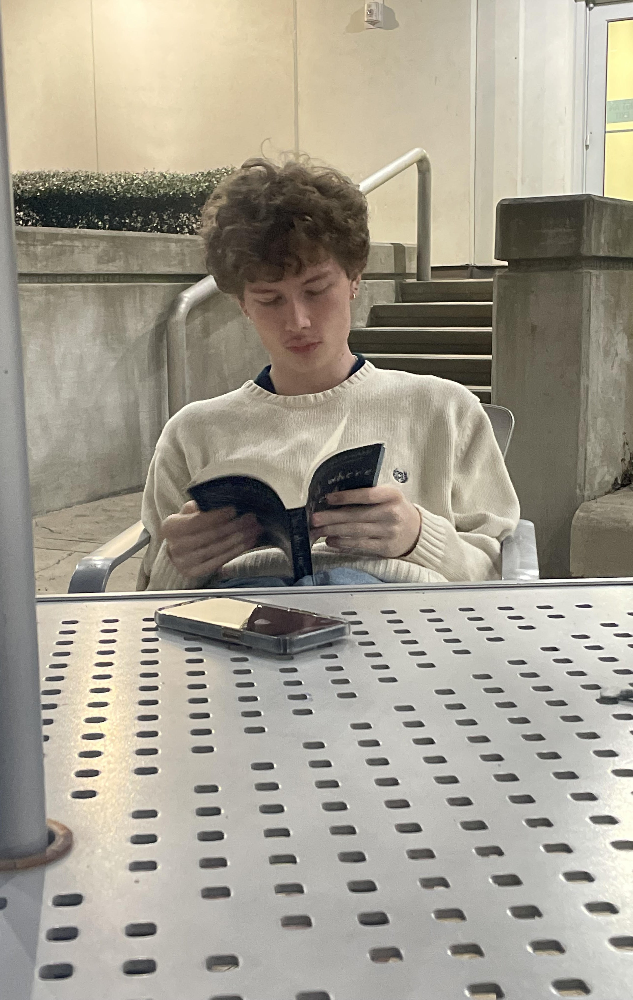

I grew up in a small, non-advanced town in West Virginia, where life moved at its own pace. It was a tight-knit community, and everyone knew each other's names. The lush, rolling hills of the Appalachian Mountains surrounded us, providing a picturesque backdrop to our everyday lives. In that humble setting, I developed a deep sense of community and an appreciation for the simpler things in life. My journey took a significant turn when I was 10 years old as my family decided to relocate to South Carolina. This move opened up a world of opportunities and experiences that I had never encountered before. I found myself in a more diverse and bustling environment, a stark contrast to the tranquility of West Virginia. It was in South Carolina that I first encountered the wonders of technology. My fascination with technology quickly became an integral part of my life. I couldn't resist the urge to take things apart, just to understand how they worked. I would spend hours tinkering with gadgets, fixing what was broken, and often improving their performance. This passion for technology became a driving force, and it led me to explore various aspects of the field, from programming and software development to hardware and electronics. But life isn't just about technology. I've learned to balance my passion with other essential aspects of life. Maintaining a healthy and active lifestyle is crucial to me, so I've dedicated time to the gym and maintaining my overall well-being. It's a way for me to recharge, both physically and mentally. Family and relationships hold a special place in my heart. I believe that the connections we build with others are what truly make life meaningful. I've always made an effort to nurture my relationships and create lasting bonds with the people I care about. Whether it's spending quality time with family or making new friends, these connections bring joy and fulfillment to my life. In addition to my focus on physical health, I recognize the importance of mental well-being. That's why I also regularly attend therapy to address and maintain my mental health. It's a valuable tool for personal growth and self-awareness, helping me navigate life's challenges and maintain a healthy mindset. So, who am I? I'm someone who started in a small town, discovered a world of technology, and learned the value of balance between work, health, family, and relationships. I'm someone who knows the significance of maintaining mental well-being and seeks personal growth in all aspects of life. My journey has shaped me into a person who cherishes both the simplicity of my roots and the complexity of the modern world, finding beauty and meaning in both.
My journey has been significantly shaped by the loving relationships within my family and the hardships we've faced together. These experiences have molded me into the person I am today, instilling important values and resilience. Growing up, I was fortunate to be part of a loving and close-knit family. Our bonds were unbreakable, and we supported each other through thick and thin. This strong foundation in the warmth of my family's love taught me the value of unconditional support, trust, and the importance of being there for one another. Yet, life hasn't always been smooth sailing. We faced our share of hardships and challenges. These difficult moments tested our resilience, but they also served as opportunities for growth. I've learned that it's during times of adversity that we discover our true strength. Our family's unwavering support for one another, even in the face of adversity, has been a driving force behind my ability to overcome obstacles. Through these experiences, I've come to understand the importance of perseverance and the significance of having a strong support system. I've seen firsthand how love, trust, and unity can help us weather the storm, emerge stronger, and turn challenges into opportunities for personal growth. My family's love and the relationships I've built with them have also influenced the way I approach my own connections. I've carried these values with me as I've developed relationships outside of my immediate family. I understand the profound impact that trust, empathy, and love can have on building lasting and meaningful relationships. The hardships we've faced as a family have taught me empathy and compassion, making me more understanding of the struggles others may be going through. It's a reminder that we all have our own battles, and a little kindness can go a long way in supporting one another. In conclusion, my journey has been profoundly influenced by the love and support of my family, as well as the challenges we've encountered together. These experiences have shaped me into a person who values relationships, cherishes the bonds of family, and understands the importance of resilience in the face of adversity. My story is a testament to the transformative power of love, unity, and perseverance, and how these qualities have guided me on my path to becoming the person I am today.